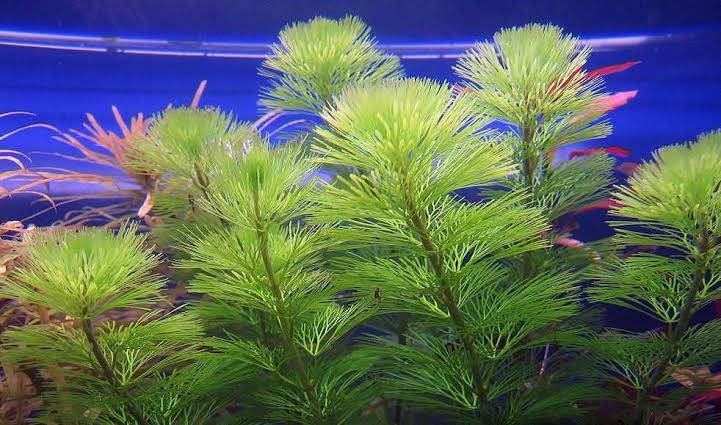
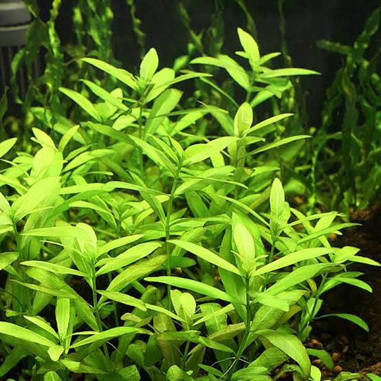
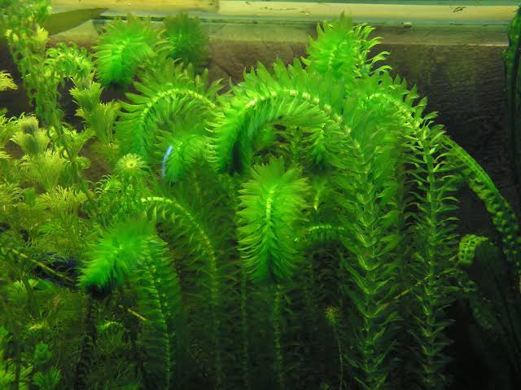
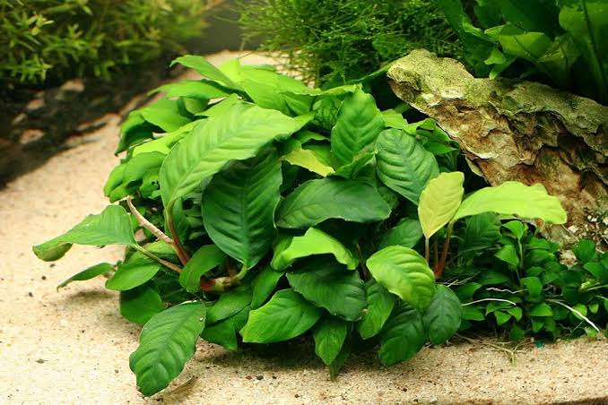
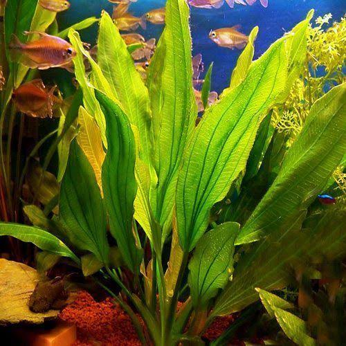

Nome: Cabomba caroliniana
Características: Uma das plantas mais belas de aquário e
também uma das mais comuns de se encontrar à venda nas lojas.
Plantio: Maços com 2 a 3 ramos e espaçamento de 4 cm
Cabomba caroliniana – A. Gray — 1837
pH: 5 a 7 — Temperatura: 18°C – 26°C
Crescimento: Médio a Rápido
Origem: América dos Sul
Família: Cabombaceae
Substrato: Fértil
Manutenção: Média
Tamanho: Até 80 cm
Iluminação: Alta
CO₂: Necessário

Nome: Hygrophila Anã
Hygrophila de rio, Hygrophila Anã – Hygrophila polysperma
Família: Acanthaceae
Origem: nativa do Bangladesh , Índia , China e Malásia. Introduzido em alguns países incluindo EUA.
Tamanho: 60 cm
pH: 6.0 a 9.0 — Temperatura: 18°C a 30°C
Iluminação: Moderada a intensa
CO2: Não necessário
Substrato: Simples
Crescimento: Rápido

Nome: Elódea comum
Família: Hydrocharitaceae
Origem: Nativa do Brasil, Uruguai e Argentina, atualmente é considerada uma planta cosmopolita
Tamanho: até 100cm
pH: 5.0 a 9.0 — Temperatura: 10°C a 28°C
Iluminação: Moderada a Forte
CO2: Não necessário
Substrato: Simples
Crescimento: Rápido

Nome: Anubia barteri
Família: Araceae
Origem: Africa
pH: 6 a 9 — Temperatura: 20°C – 30°C
Tamanho: Até 15 cm
Iluminação: Fraca a Média
CO₂: Não necessário
Substrato: Simples
Crescimento: Lento
Manutenção: Fácil

Nome: Echinodorus bleheri
Família: Alismataceae
Origem: América do Sul
Tamanho: 20 cm a 50 cm
pH: 6.0 a 8.0 — Temperatura: 20°C a 30°C
Iluminação: Moderada a forte
CO2: Não Necessário
Substrato: Simples
Crescimento: Lento